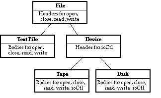

| class | declaration |
| Syntax | A classDeclaration is:
| |||||||||||||||||||||||||||||||||||||||||||||||||||||||||||||||||||||||||||||||||
| Description | A class declaration defines a template for a package of variables, constants, types, subprograms, etc. The name of the class (id) is given in two places, just after class and just after end. Items declared inside the class can be accessed outside of the class only if they are exported. Items from outside the class that are to be used in the class, need to be imported (unless they are predefined or pervasive). Instances (objects) of a class are created using the new statement. Each object is essentially a module located by a pointer.
| |||||||||||||||||||||||||||||||||||||||||||||||||||||||||||||||||||||||||||||||||
| Example | This class is a template for creating objects, each of which is a stack of strings. (See the module description for the corresponding module that implements a single stack of strings.)
class stackClass % Template for creating individual stacks
export push, pop
var top : int := 0
var contents : array 1 .. 100 of string
procedure push (s : string)
top := top + 1
contents (top) := s
end push
procedure pop (var s : string)
s := contents (top)
top := top - 1
end pop
end stackClass
var p: pointer to stackClass % Short form: var p: ^stackClass
new stackClass, p % Short form: new p
p -> push ("Harvey")
var name : string
p -> pop (name) % This sets name to be Harvey
| |||||||||||||||||||||||||||||||||||||||||||||||||||||||||||||||||||||||||||||||||
| Execute | ||||||||||||||||||||||||||||||||||||||||||||||||||||||||||||||||||||||||||||||||||
| Details | The new statement is used to create objects of a class. Many instances of a class can exist at a given time, each located by a pointer. The free statement is used to destroy objects that are no longer of use. Turing does not support garbage collection (automatic recovery of space belonging to inaccessible objects). See modules for a discussion of importing, exporting and related concepts. When an object is created by new, its initialization code is executed. In this example, the object's top variable is set to 0. As is true in modules, an exported subprogram of an object's class cannot be called until the object is completely initialized. You are not allowed to create variables of a class, as in:
var s : stack % Not legal!If the monitor keyword is present (just before class), the objects are monitors. This means that only one process at a time can be active in the object. See monitor and process. Inherit lists are used to specify inheritance. See inherit list. Implement and implement-by lists provide a special kind of expansion which supports the separation of an interface from its implementation. See implement list and implement-by list. A class cannot contain both an inherit and an implement list. Class declarations can be nested inside modules and monitors but cannot be nested inside other classes or inside procedures or functions. A class must not contain a bind as one of its (outermost) declarations. A return statement cannot be used as one of the (outermost) statements in a class. A class cannot export variables (or run time constants) as unqualified (because each object has a distinct set of variables). The syntax of a classDeclaration presented above has been simplified by leaving out pre, invariant and post clauses. The full syntax which supports pre, invariant and post is the same as that for modules. The initialization of classes is the same as that for modules. See module.
| |||||||||||||||||||||||||||||||||||||||||||||||||||||||||||||||||||||||||||||||||
| Example | We will give an example in which a subprogram in one class overrides the corresponding subprogram in a class that is being inherited. The example is based on a program that implements a file system inside an operating system. All files have open, close, read and write operations. Some files, called Device files, also have an operation called ioCtl (input/output control). The kind of file determines the implementation method. Here is the expansion (inheritance) hierarchy among the classes of files.

class File
export open, close, read, write
deferred procedure open (… parameters for open …)
deferred procedure close (… parameters for close …)
deferred procedure read (… parameters for read …)
deferred procedure write (… parameters for write …)
end File
The TextFile class implements the File interface by giving variables declarations and procedure bodies for ASCII files:
class TextFile
inherit File
var internalTextFileData :
… internal data for text files …
body procedure open
… body for open for text files …
end open
… bodies for close, read and write procedures for text files…
end TextFile
Objects to represent individual text files are created using the new statement:
var textFilePtr : ^ TextFile
% Pointer will locate a text file object
new textFilePtr % Create a text file object
textFilePtr -> read (… actual parameters …) % Read text file
The Device class adds the ioCtl procedure to the File interface.
class Device
inherit File
export ioCtl
deferred procedure ioCtl (… parameters for ioCtl …)
end Device
The Disk class provides data and procedures to implement a file that is actually a disk (the Tape class is analogous):
class Disk
inherit Device
var internalDiskFileData : … internal data for disk files
body procedure open
… body for open …
end open
… bodies for close, read, write and ioCtl procedures for disk …
end Disk
A pointer that can locate any kind of File object is declared this way:
var filePtr : ^ FileThis may locate, for example, a TextFile:
filePtr := textFilePtrThis assignment is allowed because filePtr's corresponding class (File) is an ancestor of textFilePtr's corresponding class (TextFile). It is guaranteed that the object now located by filePtr supports a version of all the operations of a File (open, close, read and write). When we call a procedure in the object located by filePtr, the actual procedure called will depend upon the object:
filePtr -> read (… actual parameters …)For example, if filePtr currently locates a Disk file, this will call the read procedure from the Disk class. This is an example of dynamic binding in which the version of read to be used is selected at run time and this choice is based on the object located by filePtr. This is called polymorphism, because File objects can have more than one form.
| |||||||||||||||||||||||||||||||||||||||||||||||||||||||||||||||||||||||||||||||||
| Example | As another example, consider class C, which contains headers and bodies for functions f and g. C exports functions f and g. There is also a class D, which inherits from C. Class D contains a body that overrides the body for g. D also contains a header and body for function h. D exports function h. Pointer p has been declared to locate an object of class C, but at runtime p locates an object of class D. When p is used to call f, by means of p->f, the body of f, which appears in C, is invoked. When p is used to call g, by means of p->g, g's overriding body in D is invoked. Any attempt to use p to call h is illegal because p can only be used to call functions that are exported from C.
class C
export f, g
procedure f
put "C's f"
end f
procedure g
put "C's g"
end g
end C
class D
inherit C % Inherit f and g
body procedure g % Overrides g in C
put "*** D's g ***"
end g
procedure h
put "*** D's h ***"
end h
end D
var p : pointer to C % p can point to any descendant of C
new D, p % p locates an object of class D
p -> f % Outputs "C's f"
p -> g % Outputs "*** D's g ***"
p -> h % Causes error "'h' is not in export list of 'C'"
| |||||||||||||||||||||||||||||||||||||||||||||||||||||||||||||||||||||||||||||||||
| Execute | ||||||||||||||||||||||||||||||||||||||||||||||||||||||||||||||||||||||||||||||||||
| See also | module, monitor and unit. See also import list, export list, implement list, implement by list, and inherit list. See also deferred subprogram. See also anyclass and objectclass.
| |||||||||||||||||||||||||||||||||||||||||||||||||||||||||||||||||||||||||||||||||